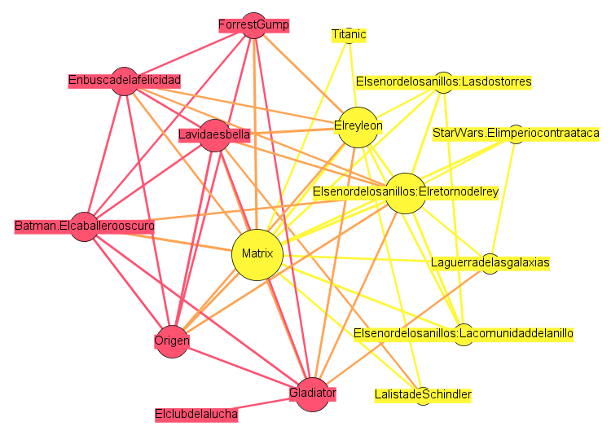

A continuación vamos a enumerar las conclusiones más relevantes obtenidas en el presente estudio:
Presentamos el ranking de valoraciones positivas que los estudiantes de informatica han dado al top 50 de películas del IMDb ( Internet movie database).
Hemos subrayado aquellas que se consideran del genero de ciencia ficción debido a que son las que mas interesarian para el catalogo de la biblioteca.
A continuación haremos un estudio a fondo de las 16 películas mejor valoradas, las cuales son:
1 Matrix ( Disponible en el catalogo de la facultad)
2 El rey Leon
3 Gladiator
4 La vida es bella
5 Origen
6 El señor de los anillos: El retorno del rey
7 Batman: El caballero Oscuro
8 Forrest Gump
9 Star Wars V: El imperio contra ataca
10 En busca de la felicidad
11 La lista de Schindler
12 El señor de los anillos: La comunidad del anillo
13 La guerra de las galaxias (1977) Episodio IV
14 El señor de los anillos: Las dos torres
15 Una mente maravillosa
16 El club de la lucha
y la relación - representación gráfica que hemos obtenido es:
En la cual se puede visualizar:
Las dos comunidades que aparecen en la red pero no se aprecia ninguna diferencia notable en cuanto al género de las películas de una comunidad y otra, por lo que vamos a pasar a un análisis más exhaustivo sobre las relaciones en la red.
Podemos detallar que las películas mejor valoradas son Matrix, El Señor de los Anillos: El Retorno del Rey y El Rey León, pertenecientes a la comunidad de color amarillo, de estas solo una esta disponible en el catalogo de la biblioteca ( Matrix)
Tenemos dos películas que solo han sido bien valoradas junto a Matrix y El Rey Leon y estas son La Lista de Schindler y Titanic. No se encuentra relación entre estas dos películas basadas en hechos reales y las otras dos fantásticas o de animación, por lo que podemos intuir que a los estudiantes de Informática se decantan por películas que tienen gran reclamación por el público en general.
Por otra parte vemos que por lo general las personas que han valorado con una puntuación alta a las películas de Star Wars : El imperio contraataca también ha valorado alto a El señor de los anillos: El Retorno del Rey, pero no al resto de la trilogía. Podríamos sacar de la red una clara recomendación para la gente que no haya visto El Club de la Lucha y le guste Gladiator.
Por ultimo, estas son las demás películas preferidas que completarían el top50, entre las cuales hay una en el catalogo de la biblioteca ( Alien):
17 El pianista
18 Titanic
19 El truco final : EL prestigio
20 Braveheart
21 Intocable
22 Seven
23 Cadena Perpetua
24 El padrino
25 Memento
26 El silencio de los corderos
27 Pulp Fiction
28 Alien: El octavo pasajero ( Disponible en el catalogo de la facultad)
29 Interstellar
30 El resplandor
31 Naufrago
32 Regreso al futuro
33 American History X
34 Los miserables
35 La milla verde
36 El sexto sentido
37 Salvando al soldado Ryan
38 Uno de los nuestros
39 Requiem por un sueño
40 American Beauty
41 Ciudad de Dios
*42 Terminator 2: EL juicio final
43 Infiltrados
44 El padrino parte II
45 Psicosis
46 Apocalypse Now
47 Apocalypto
48 Indiana jones: En busca del arca perdida
49 El bueno el malo y el feo
50 Casablanca
* Esta Disponible la última versión de esta película pero no la que más ha gustado ( la versión 2)
Del top50, hay 13 películas que pertenecen al genero de ciencia ficción de las cuales dos ya están disponibles en el catalogo de la facultad ( Matrix , Alien).
Por lo que para una posible ampliación del catalogo, el orden de preferencias de los estudiantes para el genero citado seria:
1 Origen
2 El señor de los anillos: El retorno del rey
3 Star Wars V: El imperio contra ataca
4 El señor de los anillos: La comunidad del anillo
5 Star Wars: La guerra de las galaxias (1977)
6 El señor de los anillos: Las dos torres
7 El truco final : El prestigio
8 Pulp Fiction
9 Interstellar
10 Regreso al futuro
11 Terminator 2: EL juicio final